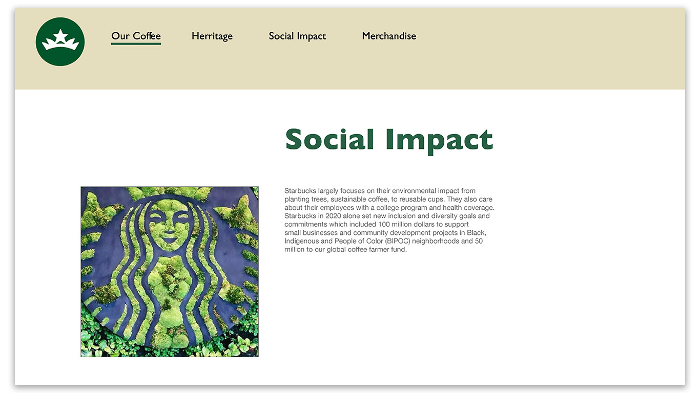
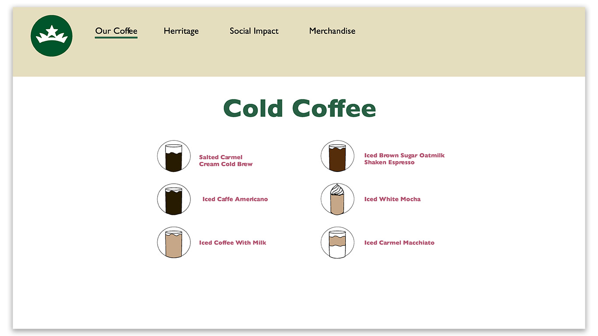
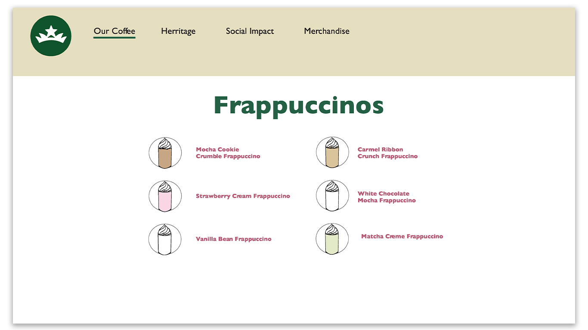
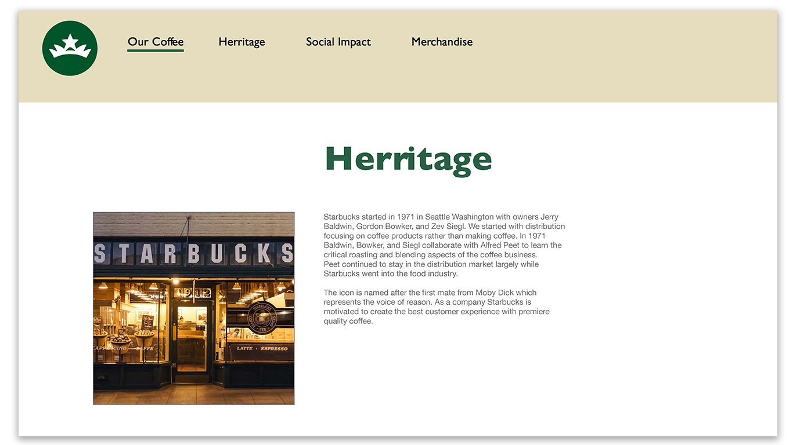
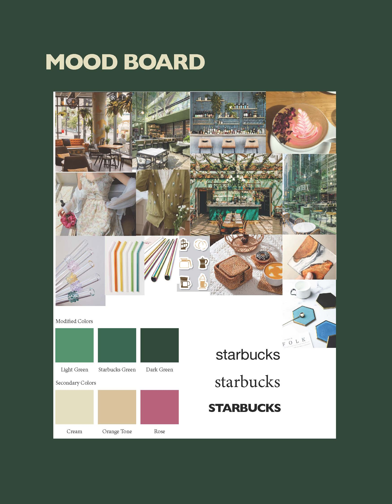
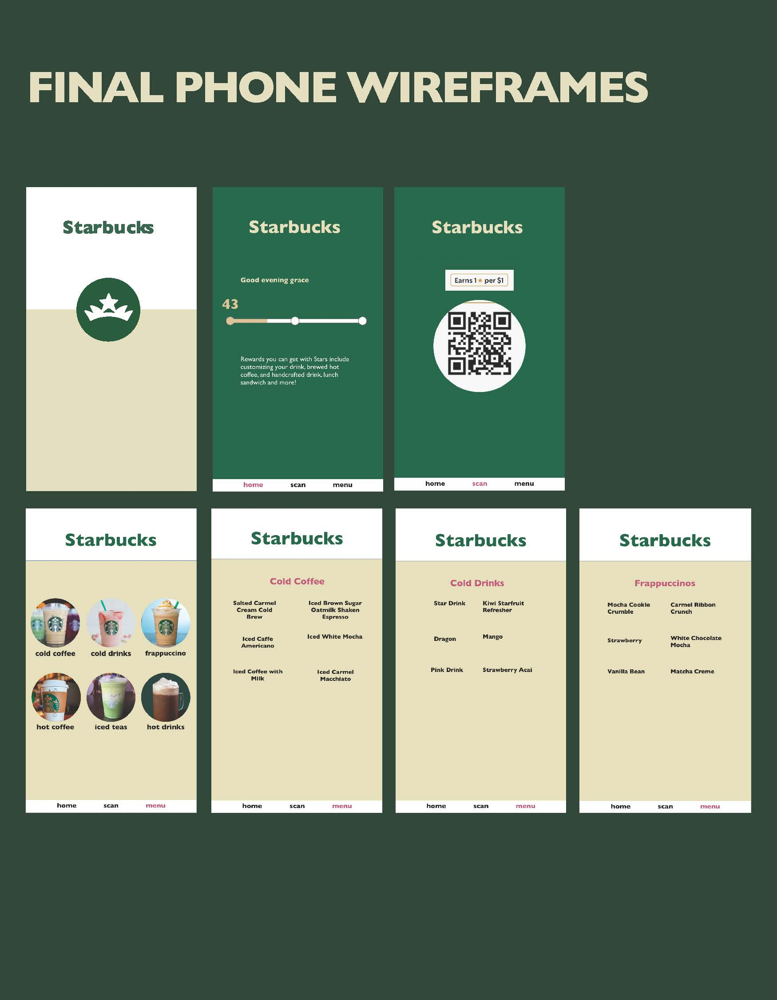
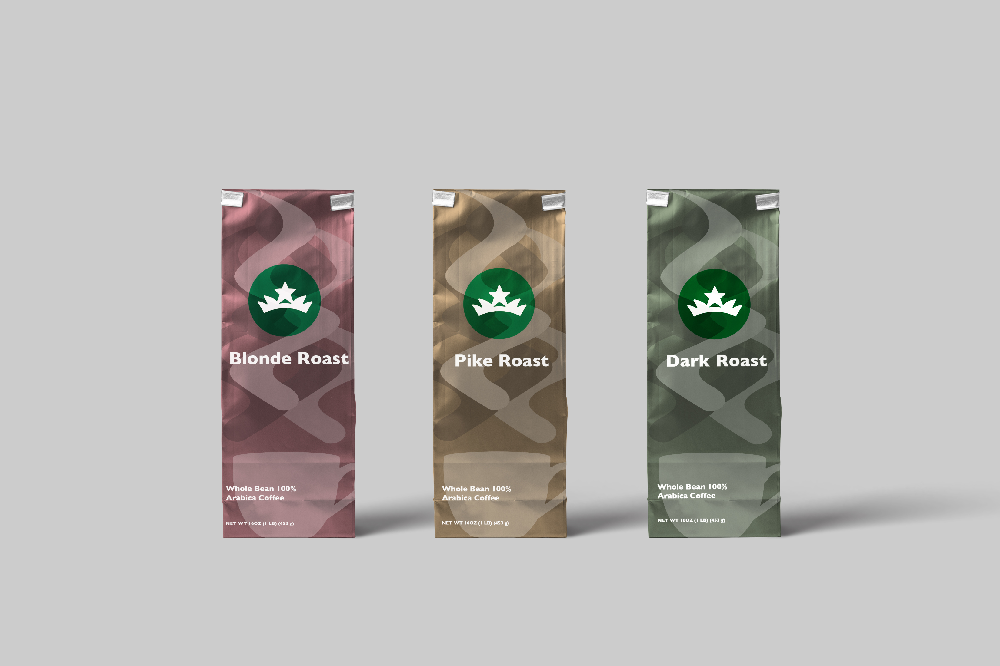

STARBUCKS REBRANDING
After doing research on Starbucks as a company I rebranded them based off of trends from their previous rebrands. Looking at previous Starbucks rebrands, I noticed a trend of them zooming into the logo. I followed that trend simplifying it to the crown and rounding the edges for a more modern look. I also wanted to have warmer colors and put more emphasis on the Starbucks experience and less on a quick, convenient way of getting coffee. Below are two mood boards from initial research, the progression of the logo, website, and phone mockups.








